制御教育教材 StampFly Ecosystem の紹介
コーディングから飛行試験、データ取得まで
伊藤 恒平（金沢工業大学）
2026年9月10日（木）大阪大学中之島センター + Zoom
システム制御情報学会・計測自動制御学会 チュートリアル講座 2026
講師紹介
伊藤 恒平
金沢工業大学
情報理工学部 ロボティクス学科
StampFly Ecosystem の開発者。専門はドローンの飛行制御工学
- 4+1 日ワークショップ（大学生向け、一般の方も参加可。講義・実習と精密着陸競技会）で同じ教材を使用
- ZEP エンジニアリング主催の講習会（2025 年 8 月、品川、2 日間）
- 高校教員向け DXH 講座（2026 年 7 月、操縦体験と書き込み実習）
- 学会チュートリアル（本日）
本日の進め方
講義とデモのハイブリッド
講師が実演しながら説明を進める。手元の環境構築でつまずいても、その場で全員を待たせることはしない
- 手を動かしたい方は、講師と同じコマンドを一緒に打ってみてほしい
- 進度が合わなかった箇所は、録画と資料を使って帰宅後に復習できる
各セッション共通の型
地図（今どこにいるか）→ 要点3つ → デモ → 理論とコードの対応表 → 復習パス → チェックポイント
参加のしかたと資料
デモの3段階
- 見るだけ: 画面とスクリーンを見ているだけで流れがわかる
- 一緒に打つ: 持参のPCとStampFlyでコマンドを再現する
- 帰宅後に再現: 会場では見るだけにして、録画と資料で後日試す
資料はすべて公開されている
リポジトリ: https://github.com/M5Fly-kanazawa/stampfly_ecosystem
ドキュメント: https://m5fly-kanazawa.github.io/stampfly_ecosystem/docs/
本日の内容はオンデマンド配信でも後日視聴できる
今日の地図
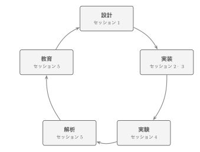
S2・S3 は「実装」、S5 は「解析・教育」を担当
StampFly Ecosystem は「設計 \(\to\) 実装 \(\to\) 実験 \(\to\) 解析 \(\to\) 教育」を循環させながら育ってきた。本日の5セッションはこの循環の上を進む
| S1 | 10:05 – 11:00 |
| S2 | 11:00 – 12:00 |
| (昼休み) | |
| S3 | 13:00 – 14:00 |
| S4 | 14:00 – 15:00 |
| (休憩) | |
| S5 | 15:30 – 16:30 |
必要機材と安全ルール
持参いただくもの
ノートPC、StampFly 実機とコントローラ（いずれも実習に参加する場合）
飛行時の安全ルール
- 実機の飛行は講師が行う。参加者は機体から距離を保つ
- ARM は機体ボタンの単クリックまたはコントローラで行う。予期せず回転したら即座に DISARM
- 機体の真上には顔や手を出さない
地図: 今ここ
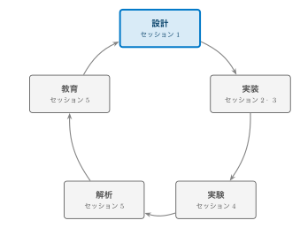
今日はこの循環を 5 つのセッションで 1 周する。まずは全体像と設計思想から
要点3つ
- マルチコプタは制御なしには1秒も飛べない。この性質が制御工学の教材として理想的である
- 必要なリソースが分散していることが普及の障壁になっている。StampFly Ecosystem は単一リポジトリへの集約でこれに応える
- ファームウェアは4階層のアクセス構造を持ち、Workshop 受講者から研究者まで同じコードベースを共有しながら自分の関心に合わせて深さを選べる
後半では、飛ばす前後で同じモデルを使って結果を確かめる仕組み（シミュレーション 3 層）にも触れる
制御がなければ飛べない
マルチコプタは固定翼機のように滑空できず、ヘリコプタのようにオートローテーションで降りることもできない。制御系が止まれば即座に墜落する
教材としての魅力
この性質は安全上の課題であると同時に、学習者が「制御がなければ飛べない」という事実を身をもって体験できる特性でもある。フィードバック制御の役割を直感的に理解する入口になる
StampFly ハードウェア
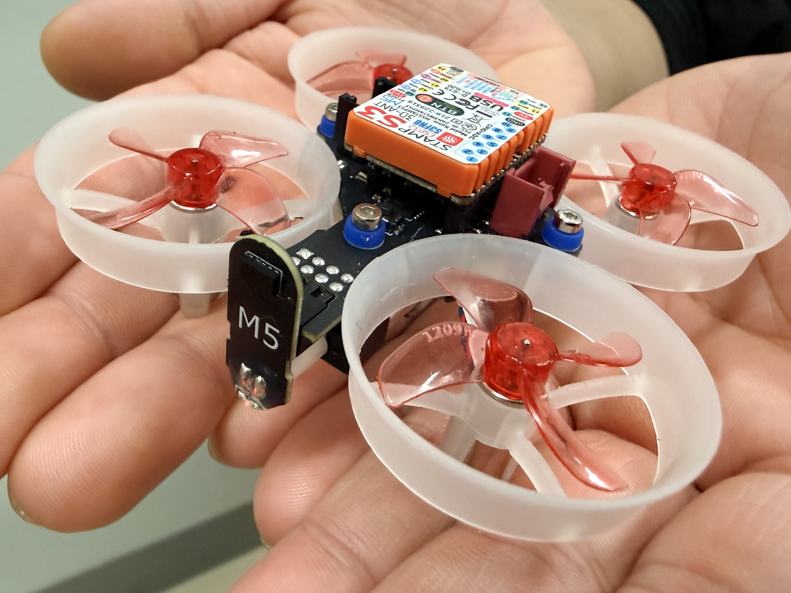
| 項目 | 仕様 |
|---|---|
| MCU | ESP32-S3（M5StampS3） |
| IMU | BMI270（6軸 400 Hz） |
| 気圧 | BMP280 |
| 磁力計 | BMM150（3軸） |
| 測距 | VL53L3CX \(\times\)2（Bottom / Front） |
| 光学フロー | PMW3901 |
| 電流電圧 | INA3221 |
| モータ | コアレスモータ \(\times\)4 |
| バッテリ | 300 mAh 1S LiPo |
| 質量 | 37 g（バッテリ含む） |
| コントローラ | M5Stack AtomS3 + Atom JoyStick（ESP-NOW） |
IMU（慣性計測装置）／ESP-NOW（ESP32 の無線プロトコル）。前方 ToF は未使用（高度推定は下方 ToF）
4つの障壁
手のひらサイズで安全性が高く安価な StampFly でも、要点②のリソース分散に加えて、教育現場での普及には次の4つの障壁がある
- ブラックボックス問題: 市販の教育用ドローンは飛ぶが、制御ループの中身に触れられない
- 理論と実装のギャップ: PIDの数式は教科書で学べても、組込みのリアルタイム制御ループとして実装するには別のスキルが要る
- 体系的教材の不在: センサ取得から状態推定、制御、実験、データ解析までを一貫して学べる教材が見当たらない
- 教育者の準備負担: カリキュラム設計・教材作成・ツール整備を一人の教育者がすべて担うのは現実的でない
既存プラットフォームとの比較
| Crazyflie | Tello EDU* | PX4 | StampFly Eco. | |
|---|---|---|---|---|
| 制御ループアクセス | ✓ | — | ✓ | ✓ |
| 教材・カリキュラム | \(\triangle\) | \(\triangle\) | \(\triangle\) | ✓ |
| シミュレータ統合 | ✓ | — | ✓ | ✓ |
| コスト | 高 | 低 | 高 | 低 |
| コード規模 | 中 | — | 大 | 小 |
制御ループへのフルアクセスと体系的な教材・ツールの統合提供を両立させ、ファームウェア全体を一人の学習者が読み通せる規模に抑えている点が異なる
*Tello EDU は2023年末に販売終了（評価は筆者の定性的見解）
エコシステムの地図
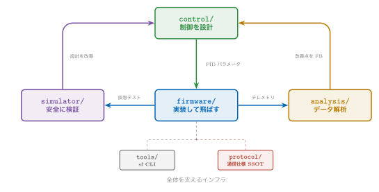
設計思想5本柱
| 柱 | 内容 |
|---|---|
| 集約と SSOT | ファーム・シミュレータ・解析・教材を単一リポジトリに集約。通信仕様は protocol/spec/ を SSOT（Single Source of Truth、唯一の正となる情報源）とする |
| sf CLI | ビルド・書込み・ログ取得・シミュレーション操作を統一コマンド体系で提供する（CLI: コマンドラインツール） |
| 4 階層アクセス | Workshop API（ws::）から Topic API・HAL・ハードウェアまで 4 つの入口が同時に存在し、学習者は必要な深さから入れる |
| シミュレータ統合 | VPython（軽量 3D）・Genesis（高精度物理）・SILS（実ファーム + MuJoCo）を同じ制御アルゴリズムで動かす |
| オープンソース | 制御ループからドライバまで公開し、ブラックボックス問題を根本から排除する |
1機から学べる8分野
この 5 本柱の上で、1 機から次の 8 分野を扱える
| 分野 | 主な学習項目 |
|---|---|
| 制御理論 | PID, カスケード制御, FF/FB, アンチワインドアップ |
| 飛行力学 | 6DoF運動方程式, ホバー条件, NED/Body座標変換 |
| センサ工学 | IMU, 気圧, 光学フロー, Allan分散, ノイズ解析 |
| 状態推定 | 相補フィルタ, ESKF, センサフュージョン |
| アクチュエータ | PWM制御, 推力モデル, プロペラ空力特性, ミキサ行列 |
| システム同定 | 周波数応答, パラメータ推定, モデル検証 |
| 通信・IoT | ESP-NOW, WiFiテレメトリ, プロトコル設計 |
| ソフトウェア工学 | リアルタイムタスク, 組込み開発, OSS開発 |
これらは独立した知識ではなく、1台の機体の中で密接に関連し合っている。PIDゲインの設計には慣性モーメントやモータ応答特性の知識が要り、推定精度はセンサのノイズ特性に左右される
深掘り: sf CLI
あとで読む idf.py を直接叩く代わりに、ビルド・書き込み・診断・ログ取得・シミュレーションを統一されたコマンド体系で提供する
| カテゴリ | コマンド例 |
|---|---|
| ビルド・書込み | sf build / sf flash |
| 診断 | sf doctor / sf monitor |
| ログ | sf log wifi / sf log viz |
| シミュレータ | sf sim run vpython / sf sils gui |
| 同定・整合 | sf sysid / sf params check |
深掘り: 4階層は同時に存在する
あとで読む ws:: 名前空間（L0 Workshop API）は、制御ループの起動やセンサ初期化を隠しつつ、setup() と loop_400Hz(dt) だけで機体を動かせるようにする
- L0 Workshop API・L1 Topic API・L2 HAL・L3 ハードウェア直叩きの4層は、レッスンの進行に応じて後から現れるのではなく、ファームウェア起動時点からすべて実装済みで並行して存在する
- 学習者はどの層からでも入口を選べる。全員がL0から順に進む必要はない
- 本チュートリアルはL0から順に説明していくが、これは教える都合の順序であり層の解禁順ではない。4層の全体像は本セッション後半の「4階層アクセス」で示す
vehicle ファーム構造
| コンポーネント数 | 30（sf_* 命名, フラット構造） |
| 通信方式 | Pub-Sub トピック（直接呼び出し禁止） |
| タスク数 | 16 |
| 制御周期 | 400 Hz（IMU \(\to\) 状態推定 \(\to\) 制御） |
| 状態推定 | ESKF（誤差状態カルマンフィルタ） |
| 制御器 | カスケード PID |
| 飛行モード | ACRO / STABILIZE / ALT_HOLD / POS_HOLD |
Pub-Sub（出版購読型のメッセージ配信）
実機検証
POS_HOLD（位置制御）は実機で検証済み。保持精度 \(\pm\)6–7 cm
400 Hz 制御ループ
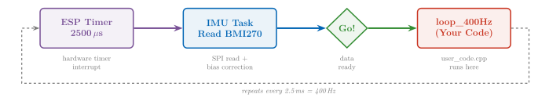
IMU 割込みを起点に、状態推定 \(\to\) 制御 \(\to\) アクチュエーションが 2.5 ms 周期で走る。全コンポーネントが同じ周期を共有する
4階層アクセス
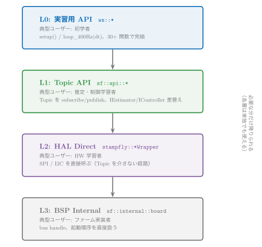
シミュレーション3層
5 本柱の「シミュレータ統合」を掘り下げる。目的の異なる 3 層を使い分ける
| 層 | 内容 | 位置づけ |
|---|---|---|
| 層1 設計用線形モデル | 実飛行ログから同定した低次 \(G(s)\) | 制御系設計・ループ整形の基準 |
| 層2 実ログ駆動再生 | 移植した制御則を実ログの外乱・指令で駆動 | パラメータ変更の A/B 判定の基準 |
| 層3 SILS | MuJoCo + 実ファーム C++、Code/Param Identity | システム全体の検証ベンチ |
SILS（Software-in-the-Loop Simulation: 実ファームをホスト PC 上で MuJoCo 物理エンジンと組み合わせて動かすシミュレーション検証）
3 層とも同じ物理パラメータを参照するため、飛ばす前の設計（層 1・層 2）と飛ばした後の答え合わせ（層 3）が同じモデルの上でつながる。合否の基準と SILS の実習は S5 で扱う
開発の3原則
あとで読む| 原則 | 内容 |
|---|---|
| Code Identity | SILS は本体ソースを書き換えず参照コンパイルして実行する。一致するのは推定・制御の数式だけでなく、ループ全体である |
| Parameter Identity | SILS も実機も params.cpp を唯一の基準として読む。チューニング値は同じスキーマで往復する |
| Model Fidelity | SILS の真値は物理モデルから得る。実機データが必要になるのは、初飛行のあとにモデルを現実へ近づける段階だけである |
デモ①: シミュレータ操縦
何を見るか
-
sf sim run vpythonを手元でも起動 - VPythonシミュレータが起動し、実機と同じ制御アルゴリズムが動く
- HIDジョイスティック（Atom JoyStick）でそのまま操縦できる
- 実機がなくても制御コードの挙動を3Dで確認できる
デモ②: 実機 POS_HOLD 飛行
何を見るか
- ホバー中の位置保持精度（実測 \(\pm\)6–7 cm）
- 手で軽く押すなどの外乱を与えたときの復帰動作
デモ②の期待結果: 位置保持
Web 版のみデモ②の期待結果: 高度と姿勢
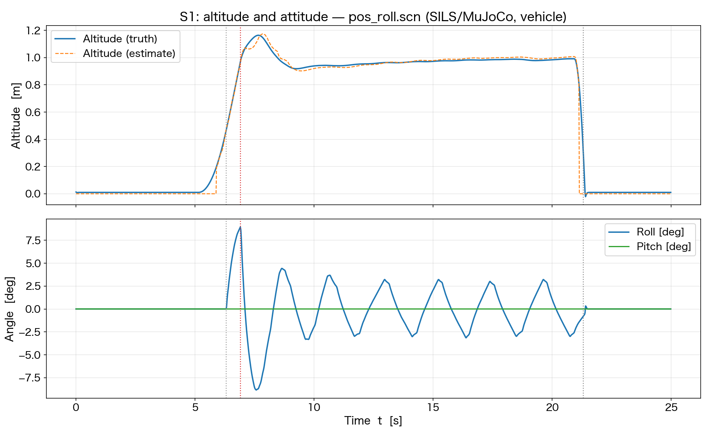
同じ飛行の高度と姿勢角の時系列。外乱直後の傾きが位置制御で戻る
復習パス
あとで読む| コマンド | 対象 | 文書 |
|---|---|---|
sf sim run vpython | シミュレータ操縦 | docs/architecture/simulation-policy.md |
sf sils gui | SILS シナリオ実行・可視化 | simulator/sils/gui/README.md |
| — | 4階層アクセス | firmware/vehicle/docs/architecture.md §2 |
チェックポイント
確認事項
- \(\square\) マルチコプタが制御教材として適している理由を説明できる
- \(\square\) StampFly Ecosystem が集約によってどの障壁に対応しているか説明できる
- \(\square\) 4階層アクセス（L0–L3）のうち自分の関心に合う層を1つ選べる
次のセッション
S2: 開発環境のセットアップとセンサデータの取得（11:00 – 12:00）— 全体像を見た次は、実際に手を動かしてセンサの値を読む番
地図: 今ここ
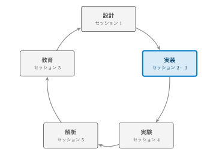
S1 で見た全体像のうち、まず実装の入口（環境構築とセンサ取得）から手を動かす
要点3つ
- ビルド環境は ESP-IDF と
sf CLIが担う。開発を伴わない参加者は Web Flasher / GUI インストーラという代替経路がある - 学習者が書くコードは
setup()とloop_400Hz(dt)の2関数だけ。センサやHWの詳細はws::名前空間が隠す - センサデータの取得経路は3通りある。目的に応じて
ws::print、sf telemetry、sf log wifiを使い分ける
開発環境の導入 (1/2): PC 側
方法①: GUI インストーラ「StampFly Setup」
ターミナル操作なしで導入できる。GitHub の Releases ページから OS 別の実行ファイルをダウンロードして起動し、ウィザードに従うだけで sf CLI 一式（ESP-IDF: Espressif の ESP32 向け開発基盤を含む）が入る
https://github.com/M5Fly-kanazawa/stampfly_ecosystem/releases/latest
方法②: CLI インストーラ
git clone https://github.com/M5Fly-kanazawa/stampfly_ecosystem
cd stampfly_ecosystem
./install.sh # Windows は install.bat
いずれの方法で導入しても、この後の source setup_env.sh \(\to\) sf doctor（このあとの「実習 1」で）確認する
OS による違いはここだけ
| OS | インストール | 環境の有効化 |
|---|---|---|
| macOS / Linux | ./install.sh | source setup_env.sh |
| Windows（CMD） | install.bat | setup_env.bat |
Windows は Git 同梱の CMD（コマンドプロンプト）でそのままファイル名を打つ。./ も source も付けない
書き込み時のシリアルポート名も違う
sf flash vehicle -p /dev/ttyACM0（Linux）／-p /dev/cu.usbmodem*（macOS）／-p COM3（Windows）
違いはこの2点だけ。sf コマンド自体（sf build、sf lesson 等）とワークフローは3 OSで完全に同一
開発環境の導入 (2/2): 機体とペアリング
開発環境なしでも書き込みだけはできる
ブラウザ（Chrome/Edge）から Web Flasher を開き、公開済みの完成版ファームウェアを機体・コントローラへ直接書き込める。インストール不要
https://m5fly-kanazawa.github.io/stampfly_ecosystem/flash/
コントローラのペアリング（初回のみ）
- コントローラの LCD パネルボタンを押しながら電源を入れる
- StampFly 本体のボタンを2秒長押しする
- 双方がビープしたらペアリング完了。以降は電源を入れるだけで自動再接続する
実習 1: 環境確認とビルド
手順
-
source setup_env.sh（Windows はsetup_env.bat） -
sf doctor（ESP-IDF・Python・USBドライバ・sf CLI 自体を診断） -
sf lesson switch sci2026:1 -
sf lesson build -
sf lesson flash
確認すること
書き込み直後の起動音と、機体上の LED が点灯・点滅すること
sf doctor が全て OK にならなくても心配は不要。このあとは「見るだけ」で参加し、復習パス（本セッション末尾）に沿って会場外で環境を整えてほしい
ツールチェーン
ESP-IDF の上に sf CLI を重ねる
idf.py を直接叩く代わりに、ビルド・書き込み・診断・ログ取得を統一したコマンド体系で提供する
| コマンド | 役割 |
|---|---|
sf build [target] | ファームウェアビルド |
sf flash [target] -m | 書き込み（-m でモニタ付き） |
sf monitor | シリアルモニタ |
sf doctor | 環境診断 |
target には vehicle / controller / workshop を指定する
学習者コードの型とワークフロー
学習者が書く関数は2つだけ
-
setup()— 起動時に1回 -
loop_400Hz(dt)— 400 Hz毎
切替・編集・ビルド・書き込み
sf lesson switch sci2026:N
sf lesson edit
sf lesson build
sf lesson flash
sf monitor workshop
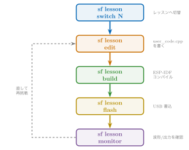
機体の軸定義
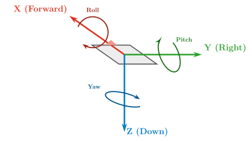
BMI270 — 6軸（3軸ジャイロ + 3軸加速度）400 Hz | Body FRD（前方-右-下）座標系
StampFly では IMU の軸をそのまま機体の Body 座標系として採用している
IMU API と単位
| 関数 | 説明 | 単位 |
|---|---|---|
gyro_x/y/z() | 角速度（Roll/Pitch/Yaw） | rad/s |
accel_x/y/z() | 加速度（X/Y/Z） | m/s2 |
静止時の目安
ジャイロ \(\approx 0\)、加速度 Z \(\approx -9.81\) m/s2（重力に対する反力）
実習 2: IMU の値を見る
手順
-
sf lesson switch sci2026:2 -
sf lesson editでuser_code.cppを開き、次ページのコードを書く -
sf lesson build -
sf lesson flash -
sf monitor workshop（sf lesson flash直後はそのまま開く）
確認: Teleplot の波形
VSCode 拡張 alexnesnes.teleplot 上で gyro_x/gyro_y の波形が動くこと
帰宅後に再現: 同じ手順（switch \(\to\) edit \(\to\) build \(\to\) flash \(\to\) monitor）をそのまま実行すればよい
データ取得経路① Teleplot
ws::print をそのままグラフにする
>変数名:値 の形式で出力すると、VSCode拡張機能 Teleplot がリアルタイムにグラフ化する
static uint32_t tick = 0;
void loop_400Hz(float dt) {
if (tick++ % 4 == 0) { // 100Hz decimation
ws::print(">gyro_x:%.3f", ws::gyro_x());
ws::print(">gyro_y:%.3f", ws::gyro_y());
}
}
VSCode 拡張 alexnesnes.teleplot を導入後、sf monitor workshop で接続（sf lesson flash 直後はそのまま開く）
実習 2: 傾けて確認
何を見るか
- StampFly を手に持ち、前後左右に傾ける
-
gyro_x/gyro_yが傾ける速さに応じて振れる - 静止させると
accel_zが \(-9.81\) 付近に戻る
前ページまでの sf lesson build && sf lesson flash 完了後、Teleplot 画面を見ながら機体を傾ける
データ取得経路② sf telemetry
あとで読むコード変更なしでライブ表示
機体は状態推定値を常時 50 Hz で送信している。受信して表示するだけなら学習者コードの変更は不要
sf telemetry # ターミナル表示（既定）
sf telemetry --web # ブラウザ表示（UDP:5005 -> SSE）
講義や複数人での画面共有には --web が見やすい。UDP:5005 を SSE（サーバーからブラウザへの一方向配信）でブラウザへ届けている
データ取得経路③ ログ取得と可視化
あとで読むWiFi 経由で 400 Hz Data Stream を記録する
sf log wifi は機体と同じ WiFi（SoftAP モードなら機体が出す AP）で 400 Hz の Data Stream を UDP 受信し、-o *.csv で 1 周期 1 行の CSV に保存する
sf log wifi -d 30 -o flight.csv # 30秒キャプチャ -> Data Stream CSV
sf log viz flight.csv
使い分けの目安
Teleplot = その場で波形を見る／sf telemetry = コード変更なしで確認／sf log wifi = 後で解析するためのデータ保存
他のセンサ
あとで読むIMU 以外のセンサも同じ考え方で読める。時間の都合で本セッションでは扱わないが、単独ビルド可能な例題として用意してある
| 例題 | センサ |
|---|---|
firmware/vehicle/examples/05_read_tof | VL53L3CX（ToF距離センサ） |
firmware/vehicle/examples/06_read_baro | BMP280（気圧センサ） |
各ディレクトリで単独ビルド可能: idf.py set-target esp32s3 && idf.py build
理論とコードの対応表
あとで読む目的: 理論の各項目が実装のどこにあるか（関数・Data Stream 列・トピック）を後で引ける索引にする
| 理論 | コード | Data Stream 列 | トピック |
|---|---|---|---|
| 角速度 \(\omega\) [rad/s]、Body FRD | ws::gyro_x() | gyro_x | sensor_imu |
| 並進加速度 \(a\) [m/s2] | ws::accel_x() | accel_x | sensor_imu |
学習者が呼ぶ ws:: 関数は、内部で sensor_imu トピックを購読しているだけである
（アクセス階層 L0（Workshop API）\(\to\) L1（Topic API）の対応）
復習パス
あとで読む| コマンド | 実習 | 文書 |
|---|---|---|
sf lesson switch sci2026:1 | 実習1（環境セットアップ） | docs/guides/troubleshooting.md |
sf lesson switch sci2026:2 | 実習2（IMU） | firmware/vehicle/docs/architecture.md §2 |
sf log wifi / sf log viz | — | docs/guides/flight-log-viz.md |
チェックポイント
確認事項
- \(\square\)
sf doctorが通る、または代替経路（Web Flasher / GUI インストーラ）を把握した - \(\square\)
setup()/loop_400Hz(dt)の2関数構造を説明できる - \(\square\) ジャイロ・加速度をどれか1つの経路で確認できた
次のセッション
S3: モータ制御とコントローラ入力の実装 — センサの次は、機体を動かす側を作る
地図: 今ここ

S2 でセンサの値を読めるようになった。ここでは読んだ値を使って機体を動かす側（モータ・コントローラ）を作る
要点3つ
- モータは PWM（パルス幅変調）の Duty 比で駆動する。4基の配置と回転方向はトルクバランスで決まっている
- コントローラのスティック値は ESP-NOW で 14 バイトの
ControlPacketとして届く -
ws::motor_mixer(T,R,P,Y)で手動ミキシングしても、フィードバックがない限り安定して飛べない。ここに次セッションの動機がある
安全
モータを回す実習の注意
- 必ず机上で行う。回転中はモータに手を近づけない
- Duty は 0.15 以下に固定する。ファーム側では強制されないので数値を必ず確認する
- ARM は機体ボタンの単クリックまたはコントローラで行う。コードの中で自動 ARM しない
- 異常な振動・音・回転が起きたら即座に DISARM（機体ボタン再クリック）
止め方: 機体ボタンをもう一度クリック（DISARM）。バッテリー駆動での確認を基本とする
モータと PWM
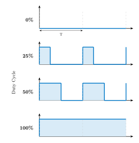
- LEDC（ESP32 のハードウェア PWM）でモータを駆動する
- Duty 0% = 停止、100% = 最大回転
- API:
ws::motor_set_duty(id, duty)
id=1–4, duty=0.0–1.0
モータ配置
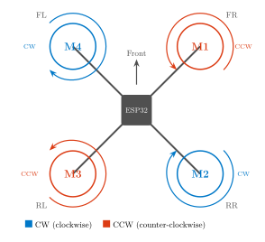
- モータ ID: 1=FR（右前）、2=RR（右後）、3=RL（左後）、4=FL（左前）
- 対角のモータが同じ方向に回転する。M1・M3 = CCW、M2・M4 = CW（反トルクを打ち消す）
実習 3: Duty をハードコードして回す
-
sf lesson switch sci2026:3 - 右のコードに書き換える
-
sf lesson build -
sf lesson flash - 機体ボタンを1回クリックして ARM
- 確認: FR モータだけが回る
void loop_400Hz(float dt) {
ws::motor_set_duty(1, 0.10f); // FR
ws::motor_set_duty(2, 0.00f); // RR
ws::motor_set_duty(3, 0.00f); // RL
ws::motor_set_duty(4, 0.00f); // FL
}
注意: 配布される模範解答（--solution）は起動時に自動 ARM する。必ず机上に置いた状態で起動すること（コードの中で自動 ARM しない）
コントローラ

ESP-NOW と ControlPacket
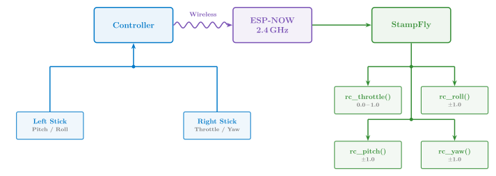
コントローラとStampFlyは ESP-NOW で直接通信する。1パケット ControlPacket は 14バイト（throttle/roll/pitch/yaw + flags + checksum）を約 50 Hz（TDMA フレーム周期 20 ms）で送信する
TDMA で 30 機を同時に飛ばす
TDMA（時分割多重アクセス、Time Division Multiple Access）
1つの無線チャンネルを短い時間枠（スロット）に分割し、機体ごとに送信タイミングをずらして電波の衝突を避ける方式
| フレーム周期 20 ms、スロット幅 2 ms | \(\to\) 1フレーム10スロット |
| 1チャンネルあたり最大10機 | 非重複3チャンネル（1/6/11ch）で理論上30機 |
なぜ必要か
教室で複数の送信機が無調整のまま同時に電波を出すと衝突し、機体が通信途絶と判断して自動着陸する
スロットの割当
タッチメニューで Device ID（0–9）を手動設定し NVS（不揮発性メモリ）に保存（再起動後に反映）。ID=0 が20 msごとにビーコンを送る「親機」、他はその受信時刻を基準に自分のスロットのみで送信する。ペアリングでは自動割当されない
実績: DXH2026講座で10台を1/6/11chに4/3/3台で分散、Device IDを個別割当し同時運用した
ペアリングとチャンネル
ペアリング
コントローラの M5 ボタン（LCD パネル）を押しながら電源ON \(\to\) StampFly のボタンを約2秒長押し \(\to\) 両方のビープで完了。次回以降は自動接続
チャンネル設定
教室内で複数機体が同時に飛ぶと混信する。ws::set_channel(ch) を setup() で呼んで機体のチャンネルを 1/6/11 のいずれかにし、再ペアリングする。コントローラはペアリング時に機体のチャンネルへ自動追従する
自分で購入したコントローラを使う場合
ご購入直後のコントローラには出荷時点のファームウェアが入っているが、本チュートリアルで使う版とは異なる。最初に一度だけ、sf flash controller で書き込み直す必要がある
オープンループ制御
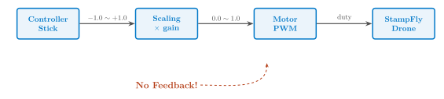
ws::rc_throttle/roll/pitch/yaw() | スティック値の取得 |
ws::motor_mixer(T, R, P, Y) | 4モータへの配分 |
ミキサ行列
Web 版のみ実習 4: スティックでモータを回す
-
sf lesson switch sci2026:4 - コントローラとペアリング
-
ws::motor_mixer(T,R,P,Y)を書く -
sf lesson build -
sf lesson flash - 確認: スティックで回転差が出る
void loop_400Hz(float dt) {
float t = ws::rc_throttle();
float r = ws::rc_roll();
float p = ws::rc_pitch();
float y = ws::rc_yaw();
ws::motor_mixer(t, r, p, y);
}
これでは飛べない理由
モータの個体差，機体のミスアライメント（推力軸のずれ・重心ずれ），電池電圧の低下といった外乱に対して何の補正もかからないため，スティック指令どおりの回転を保てない
プラントの定義
本セッションで作った経路（ミキサ \(\to\) モータ \(\to\) 機体）が、そのまま制御対象（プラント）の入出力になる
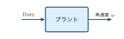
- 入力: ミキサが出す4つの Duty（
ws::motor_mixer(T,R,P,Y)の R/P/Y トルク指令に相当） - 出力:
ws::gyro_x/y/z()が返す角速度の実測値
次セッションへ
S4 の PID 制御器がこの間にフィードバックループを作り，出力を目標値に近づける。伝達関数とゲイン \(K_p\) の設計が S4「フィードバック制御の基礎」の主題である
理論とコードの対応表
あとで読むここまで登場した理論用語・API・通信・実装トピックの対応を一覧できるようにまとめた早見表
| 理論 | コード | 通信 | トピック |
|---|---|---|---|
| Duty比 \([0,1]\) | ws::motor_set_duty(id,d) | — | actuator_motor |
| スティック指令 \(T,R,P,Y\) | ws::rc_throttle() 等 | ControlPacket（14B） | command_setpoint |
| ミキシング | ws::motor_mixer(T,R,P,Y) | — | — |
復習パス
あとで読む| コマンド | 実習 | 文書 |
|---|---|---|
sf lesson switch sci2026:3 | 実習 3 モータ制御 | firmware/vehicle/docs/hardware_init.md |
sf lesson switch sci2026:4 | 実習 4 コントローラ入力 | protocol/spec/（ControlPacket） |
sf flash controller | — | docs/commands/sf-flasher.md |
すべて sf lesson build \(\to\) sf lesson flash で実機に反映する
チェックポイント
確認事項
- \(\square\) Duty とモータ配置・回転方向の対応を説明できる
- \(\square\) ControlPacket がどの経路（ESP-NOW）でどれだけの頻度で届くか説明できる
- \(\square\) オープンループ制御が「なぜ飛べないか」を自分の言葉で説明できる
次のセッション
S4: フィードバック制御の基礎 — PID による姿勢安定化（14:00 – 15:00）
地図: 今ここ
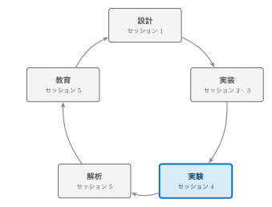
S2・S3 で組み上げた機体を、本セッションでは制御理論と突き合わせて飛ばす。 「設計 \(\to\) 実装」の次にくる「実験」のフェーズにあたる。
本セッションで扱うもの
レート P 制御の初飛行 \(\to\) プラントモデルによる裏付け \(\to\) PID 化 \(\to\) 姿勢推定 \(\to\) 実機データでの検証
要点3つ
- モータ+機体のプラント伝達関数 \(G_p(s) = K/(s(\tau_m s+1))\) を実測パラメータから導出し，ゲイン設計に使う
- P 制御から PID 化し，不完全微分・アンチワインドアップ・積分リセットまで含めたvehicle 実装と学習者コードを対比する
- フライトデータからプラントを同定し，設計値と実測値を突き合わせる
本セッションの立ち位置
ここまでのレッスンは動かすことが目的だった。ここからは，動いた結果を モデルと数値で説明できるかを問う
内側ループ: レート制御
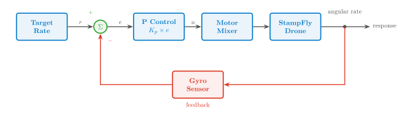
- この図は内側ループ（レート制御）: 目標角速度とジャイロ計測値の差を制御。 ACRO はこのループ単体で完結する
- 外側ループ（姿勢制御）は，この図の入力 Target Rate を作る側にもう1段乗る。 目標姿勢角と推定角の差から目標角速度を作り，STABILIZE 以上で有効になる （カスケード = ループの入れ子）
PID 制御器
Web 版のみ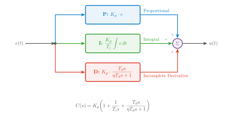
プラントモデル
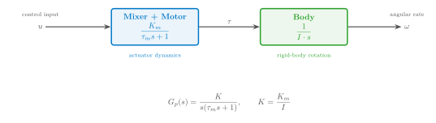
ホバー近傍で線形化すると2ブロックに集約できる
- Mixer + Motor: duty \(\to\) トルク，1次遅れ \(K_m/(\tau_m s+1)\)
- Body: トルク \(\to\) 角速度，積分器 \(1/(I \cdot s)\)
実測パラメータ
| パラメータ | 記号 | Roll | Pitch | Yaw |
|---|---|---|---|---|
| 慣性モーメント | \(I\) | 9.16e-6 | 13.3e-6 | 20.4e-6 kg\(\cdot\)m\(^2\) |
| トルクゲイン | \(K_m\) | 9.3e-4 | 9.3e-4 | 1.6e-4 N\(\cdot\)m |
| モータ時定数 | \(\tau_m\) | 0.02 s（共通，実測 0.0163 s） | ||
| プラントゲイン | \(K = K_m/I\) | 102 | 70 | 8.0 rad/s\(^2\) |
注: この \(K_m\)（duty\(\to\)トルク，N\(\cdot\)m）はモータの逆起電力定数 （back-EMF constant，V/(rad/s)）とは別物（記号が同じだけ）
軸ごとに \(K\) が違う理由
Roll/Pitch は同じ \(K_m\) だが \(I_{yy} > I_{xx}\) なので Pitch の方が遅い。 Yaw は \(\kappa \ll L\)（トルク推力比がアーム長よりずっと小さい）ため \(K_m\) 自体が小さく，さらに遅い
実習 6 配布コードの \(K_{yaw}=19\)（旧 \(\kappa=9.71\times10^{-3}\) m 由来）は この表の \(K=8.0\)（現行 \(\kappa=4.10\times10^{-3}\) m 由来）と異なる（後述の「PID 工学形式パラメータ」で詳述）
2次系設計
あとで読む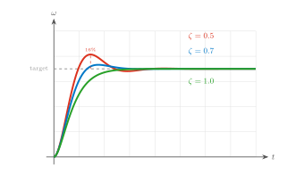
閉ループ伝達関数（2次系）
\(\zeta\) から \(K_p\) を逆算する設計式
Roll/Pitch で \(\zeta = 0.7\)（オーバーシュート約5%）を狙うと \(K_{p,roll}=0.25\)，\(K_{p,pitch}=0.36\)
開ループボード線図
あとで読む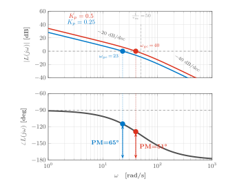
開ループ伝達関数
\(K_p\) を上げるとゲイン交差周波数 \(\omega_{gc}\) が上がり，位相余裕（PM）は下がる。 P 制御だけでは応答速度と安定性がトレードオフの関係にある
無駄時間の影響
前の「開ループボード線図」で見た \(L(s)\) に、むだ時間を加える
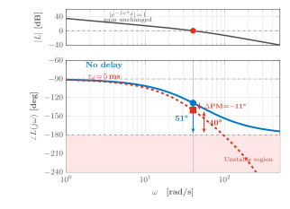
制御ループの無駄時間
\(\tau_d \approx 5\) ms（センサ処理 + 制御演算 + PWM 更新）
実用上 PM \(\geq 60°\) が必要
モデル上は安定なゲインでも，無駄時間を足すと実機で振動することがある
実習 5: レート P 制御で初飛行
実装する内容（user_code.cpp の TODO）
誤差 \(=\) 目標角速度 \(-\) 実測角速度，出力 \(=K_p\times\)誤差 を Roll/Pitch/Yaw
それぞれで計算し ws::motor_mixer(T,R,P,Y) に渡す。角速度目標は
ws::set_rate_target(roll,pitch,yaw) で Data Stream に記録しておく
（実習 7 のシステム同定で使う）
-
sf lesson switch sci2026:5 -
user_code.cppの TODO を埋める（ws::gyro_x/y/z()，ws::rc_roll/pitch/yaw()） -
sf lesson build -
sf lesson flash - 確認: 講師が完成コード（\(K_p=0.5\)）で飛ばす。スティック追従とわずかな振動を見る
帰宅後に自分の \(K_p\) で飛ばして再現する
実習 5 の振り返り: レート P 制御
float Kp_rp=0.5f, Kp_yaw=2.0f, rmax=1.0f, ymax=5.0f;
float re = ws::rc_roll()*rmax - ws::gyro_x();
float pe = ws::rc_pitch()*rmax - ws::gyro_y();
float ye = ws::rc_yaw()*ymax - ws::gyro_z();
ws::motor_mixer(ws::rc_throttle(),
Kp_rp*re, Kp_rp*pe, Kp_yaw*ye);
実習 5 では飛ばして安定するかどうかだけを見た。\(K_p=0.5\) は勘で決めた値である
モデルで見る実習 5 の設計
Web 版のみ\(\zeta = 0.7\) の設計式（「2次系設計」）から求めた \(K_p\) と、実習 5 で勘で置いた \(K_p = 0.5\) を比べる
| Roll（\(K=102\)） | Pitch（\(K=70\)） | |
|---|---|---|
| 実習 5 の \(K_p=0.5\) での \(\zeta\) | 0.50 | 0.60 |
| \(\zeta=0.7\) 設計の \(K_p\) | 0.25 | 0.36 |
読み取り
実習 5 の \(K_p=0.5\) は Roll で \(\zeta=0.50\)，やや振動的な設定だったとモデルが説明する。 P 制御だけでは，ゲインを下げて安定性を確保すると定常偏差と外乱への弱さが残る。 ここから I 項・D 項を追加する
実習 6: システムモデリング
実装する内容（user_code.cpp の TODO）
設計式 \(K_p=1/(4\zeta^2 K \tau_m)\) を Roll/Pitch/Yaw それぞれで実装する
（K_roll/K_pitch/K_yaw，tau_m は定義済み）。
\(\zeta=0.7\to0.5\to1.0\) の順に変えて飛行し，違いを体感する
-
sf lesson switch sci2026:6 -
Kp_roll/pitch/yawを設計式で計算するコードを書く -
sf lesson build -
sf lesson flash - 確認: \(\zeta\) を変えた3種類の飛行の違いを見る
帰宅後に自分のコードで \(\zeta\) を振って再現する
実習 7: システム同定（sf sysid fit）
実装する内容（user_code.cpp の TODO）
実習 5 の P 制御コードに ws::set_rate_target(roll,pitch,yaw) を
追加する（角速度目標を Data Stream に記録するだけで，制御自体には無関係）
-
sf lesson switch sci2026:7 - \(K_p\) を設定し
ws::set_rate_targetを呼ぶ -
sf lesson build -
sf lesson flash - 飛行しながら
sf log wifi -o flight.csv -
sf sysid fit flight.csv --kp 0.5 --plot
確認: 同定結果 \(K,\tau_m\) が実習 6 の理論値と数%の誤差で一致する。 帰宅後に自分のフライトデータで再現する
システム同定: sf sysid fit
\(K_p\) が既知なら，閉ループデータから開ループプラントを復元できる
\(u(t) = K_p(\text{target}-\text{gyro})\)，\(y(t)=\text{gyro}\) として \(G_p(s)=K/(s(\tau_m s+1))\) に最小二乗フィット
sf sysid fit flight.csv --kp 0.5 --plot
Roll K= 98.5 (ref:102.0, err:3.4%) tau_m=0.019 R2=0.94
Pitch K= 72.1 (ref: 70.0, err:3.0%) tau_m=0.021 R2=0.91
理論値（実習 6）との誤差3〜4%は，モデル簡略化と無駄時間の影響で説明できる
実習 8: PID 制御
実装する内容（user_code.cpp の TODO）
実習 5 の P 制御に I 項（integral += error*dt を \(\pm0.5\) でクランプ）と
D 項（Kd*(error-prev_error)/dt）を追加する。disarm 時は
integral/prev_error を 0 にリセットする
-
sf lesson switch sci2026:8 - 軸ごとに I 項・D 項・アンチワインドアップを追加
-
sf lesson build -
sf lesson flash - 確認: 実習 5（P のみ）と比べて定常偏差とオーバーシュートの変化を見る
帰宅後に自分のゲインで再現する
PID 工学形式パラメータ
あとで読む| パラメータ | 意味 | 効果 |
|---|---|---|
| \(K_p\) | 比例ゲイン | 大きいほど応答が速い，大きすぎると振動 |
| \(T_i\) | 積分時間 [s] | 小さいほど積分が強く効き偏差が早く消える |
| \(T_d\) | 微分時間 [s] | 大きいほど微分が強く効き振動を抑える |
| \(\eta\) | フィルタ係数 | \(0.1\sim0.2\)，大きいほどノイズに強い |
教科書形式との対応（この形は vehicle の rate.<axis>.kp/ti/td が使う）
\(K_i = K_p / T_i\,,\quad K_d = K_p \cdot T_d\)（逆に \(T_i = K_p/K_i,\ T_d = K_d/K_p\)）
実習 8 の解答は工学形式ではなく直接ゲイン \((K_p,K_i,K_d)\) を使う： Roll \((0.25,0.3,0.005)\)，Pitch \((0.36,0.3,0.005)\)，Yaw \((2.0,0.5,0.01)\) （\(K_p\) は Roll/Pitch が「2次系設計」の \(\zeta=0.7\) 設計値，Yaw のみ経験値）。 不完全微分フィルタと \(\eta\) は未使用（vehicle 実装が追加する改良点）。 実習 6 の配布コードは \(\kappa\) 改定前の \(K_{yaw}=19\)（\(K_p=1.34\)）のまま， 現行 \(\kappa=4.10\times10^{-3}\) m の \(K=8.0\) を設計式に適用すると \(K_p=3.19\)
D 項とアンチワインドアップ
あとで読む実習 8 学習者コード
誤差の後退差分 D + 積分クランプ（フィルタ・条件分岐なし）
// D term: raw backward difference
float D = Kd*(err-prev_err)/dt;
// Anti-windup: clamp the integral itself
integral += err*dt;
integral = clamp(integral, 0.5f);
float I = Ki*integral;
vehicle 実装: sf_controller_pid
D項に不完全微分フィルタ（\(\eta=0.125\)）を追加し，誤差ではなく 測定値に掛ける（D-on-M）。目標値が階段状に変わっても 微分キックが出ない
アンチワインドアップ
単純な積分クランプではなく，出力が飽和方向に押される間だけ 積分を止める「条件付き積分」を使う
実習 8 の積分は \(\pm0.5\) のクランプのみ（disarm 中は毎ループ 0 に戻る）。
D-on-M・条件付き積分・不完全微分フィルタは vehicle 実装が追加する改良点
（学習者コードへの拡張課題にもなる）。sf_controller_pid/include/pid.hpp
が vehicle 実装のコード
離散化と ARM 時リセット
あとで読む離散化: 双一次変換（Tustin，vehicle 実装）
sf_controller_pid は比例・積分・微分に双一次変換を使う（\(\alpha, a, b\) の式）。
実習 8 は後退差分 D と矩形積分（Tustin ではない）
積分リセットのタイミング（vehicle 実装）
積分器は DISARM 中ずっとゼロなのではなく，ARM 遷移のたびに リセットされる。着地して DISARM し，次に ARM した瞬間に積分が空になり， 前のフライトの偏差を引きずらない
ライブチューニング（param set での即時反映）では，積分器の状態は
保持される。ゲイン変更のたびにループを蹴らないための区別。
実習 8 は disarm 中は毎ループ 0 に戻り，結果として同じ効果になる
実習 9: 姿勢推定（相補フィルタ）
実装する内容（user_code.cpp の TODO）
atan2f で加速度から角度を計算し（accel_roll = atan2f(ay,az) など），
相補フィルタ \(\hat\theta_k=\alpha(\hat\theta_{k-1}+\omega\Delta t)+(1-\alpha)\theta_{accel}\)
（\(\alpha=0.98\)）を実装する。ws::estimated_roll()（機体既定の ESKF）と
Teleplot で比較する
-
sf lesson switch sci2026:9 - 相補フィルタを実装
-
sf lesson build -
sf lesson flash -
sf monitor+ Teleplot でcf_rollとeskf_rollを比較
確認: 機体を手で傾け，両者が近い挙動をすることを見る。帰宅後に \(\alpha\) を変えて再現する
姿勢推定: ジャイロドリフト問題
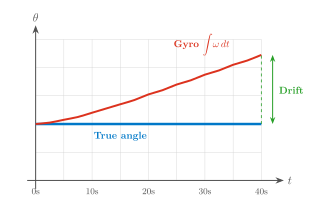
- ジャイロは角速度 \(\omega\) を測定，角度は積分 \(\theta=\int\omega\,dt\) が必要
- バイアスが蓄積し，ドリフトが増大する
問題
ジャイロ単体では長時間の姿勢推定ができない。STABILIZE 以上で 姿勢角を目標にするには，角度そのものの推定が要る
相補フィルタと STABILIZE
Web 版のみ自動チューニング: sf sysid rate-fit / rate-tune
ETFE によるプラント同定と仕様ベースのゲイン設計
チャープ（またはダブレット）励振で軸ごとに \((b, L, T)\) を推定し， \(G_p(s) = b\,e^{-Ls}/(s(Ts+1))\) にフィットする。sf sysid fit は P 制御のみ仮定の 逆算だが，ここでは実際に飛んだ PID 出力（I・D 項含む）を再構成してから ETFE を取る閉ループ同定
sf sysid rate-fit flight.csv --axis roll -o fit.json
sf sysid rate-tune --fit fit.json --wc 25 --pm 60
rate-tune はゲイン交差周波数 \(\omega_c\) と位相余裕 PM の仕様を満たす
\(K_p/T_i/T_d\) を逆算し，param set rate.roll.kp ... の形で出力する
注: 学習者コードで rate-fit/rate-tune を使うには，角速度目標を計算した
直後に ws::set_rate_target(roll,pitch,yaw) を呼ぶ（実習 5 の解答でヒント導入・
実習 7 で必須，Data Stream の rate_ref_* に記録される）
デモ: 完成コードで飛行
デモの見方
見るだけ: ステップ応答の波形と設計値の一致を確認するだけで要点はつかめる。
一緒に打つ: 手元の flight.csv で sf sysid fit を試す。
帰宅後に再現: 本日は見るだけにして，後日実習 5〜9を通しで動かす
手順
- PID 化した学習者コードで飛行し，
sf log wifiでテレメトリ取得 -
sf log vizでロール角速度のステップ応答を表示 - モデル予測（\(\zeta=0.7\) の応答波形）と重ねて比較
デモの期待結果: P と PID のステップ応答
Web 版のみ期待結果の再現手順
あとで読むsf sils build --target workshop
sf lesson switch sci2026:5 --solution
touch firmware/workshop/main/user_code.cpp
sf sils build --target workshop
sf sils scenario simulator/sils/scenarios/workshop_acro_step.scn --target workshop
S5「実習: 自分の PID を SILS で飛ばす」も workshop_acro.scn で同様に再現できる
理論とコードの対応表
あとで読む目的: 同じ概念を指す変数・パラメータが，学習者コード／vehicle 実装／ Data Stream の間でどう呼び名を変えるかを一覧で確認する
| 教科書表記 | 実習 8 学習者コード | vehicle 実装 | Data Stream |
|---|---|---|---|
| 比例ゲイン \(K_p\) | float Kp（無次元） | rate.roll.kp（Nm/(rad/s)） | — |
| 積分ゲイン \(K_i\)（\(T_i{=}K_p/K_i\)） | float Ki（直接ゲイン） | rate.roll.ti（s，換算値） | — |
| 微分ゲイン \(K_d\)（\(T_d{=}K_d/K_p\)） | float Kd（フィルタなし） | rate.roll.td，\(\eta\)固定（実習8は未使用） | — |
| 姿勢ゲイン | —（実習 8では未使用） | attitude.roll.kp/ti/td | — |
| 目標角速度 | target | rate_sp_roll | rate_ref_roll |
| 角速度計測値 | ws::gyro_x() | state.angular_rate[0] | gyro_x |
| アンチワインドアップ | 積分クランプ \(\pm0.5\) | 条件付き積分（pid.hpp） | — |
| ARM 時リセット | disarm 中毎ループ 0 に | PidController::reset()（ARM遷移時） | — |
レートループの \(K_p\) は，学習者コードでは duty 空間の無次元値， vehicle 実装では物理トルク単位（ミキサーが推力配分に変換する前の値）。 数値を単純比較できない点が「学習者コードと vehicle 実装の違い」を最もよく表す
復習パス
| コマンド | 実習 | 文書 |
|---|---|---|
sf lesson switch sci2026:5 | 実習 5 レート P 制御 | Workshop Lesson 5 |
sf lesson switch sci2026:6 | 実習 6 システムモデリング | Workshop Lesson 6 |
sf sysid fit | 実習 7 システム同定 | Workshop Lesson 7 |
sf lesson switch sci2026:8 | 実習 8 PID 制御 | Workshop Lesson 8 |
sf lesson switch sci2026:9 | 実習 9 姿勢推定 | Workshop Lesson 9 |
すべて sf lesson build \(\to\) sf lesson flash で実機に反映する。
--solution で模範解答に切り替えられる
Workshop スライド（docs/events/stampfly_workshop/slides/chapters/）内の該当 Lesson 章に対応
チェックポイント
確認事項
- \(\square\) \(G_p(s)=K/(s(\tau_m s+1))\) と実測パラメータの対応を説明できる
- \(\square\) P 制御の限界と，I 項・D 項が何を補うかを説明できる
- \(\square\) 不完全微分・アンチワインドアップ・ARM 時リセットで 学習者コードと vehicle 実装がどう違うか説明できる （詳しくは持ち帰り資料「D 項とアンチワインドアップ」「離散化と ARM 時リセット」）
- \(\square\)
sf sysid fitの入出力と，理論値との比較の読み方を理解した
次のセッション
S5: シミュレータ・解析ツールの活用と発展的テーマ（15:30 – 16:30）— 飛ばして確かめた結果を、シミュレータと解析ツールで裏付ける
地図: 今ここ
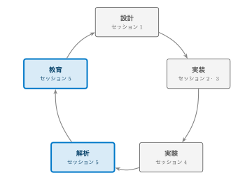
S4 で飛ばした結果を，本セッションではシミュレータと解析ツールで 裏付ける。「実験」の次にくる「解析」と「教育」のフェーズにあたる。
本日の最後に扱うもの
3層シミュレーション \(\to\) SILS 実習 \(\to\) 解析ツールと教育教材 \(\to\) 研究・発展テーマ \(\to\) 質疑
要点3つ
- StampFly のシミュレーションは目的の異なる3層で構成され， 層3（SILS）は実ファームを無改変で走らせる
- 学習者が実装した推定器・制御器は，L1 Topic API 経由で 既存の実装と差し替えられる
- 実習 5/8 で書いた PID コードは，実機を飛ばす前に SILS で 検証してから持ち帰れる（本セッション後半で実習）
本セッションの立ち位置
S4 までは1機の StampFly を飛ばす話だった。ここからは，飛ばさずに 検証する方法と，1機から先の広がりを扱う
シミュレーションの3層構造
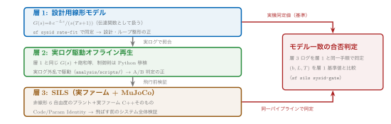
目的の異なる3層を使い分ける。詳細は docs/architecture/simulation-policy.md を参照
層1・層2: 設計モデルとログ再生
層1: 設計用線形モデル
\(G(s) = b\,e^{-Ls}/(s(Ts+1))\) を sf sysid rate-fit で実飛行ログから
同定し，制御設計とループ整形の基準とする（S4 で扱った同定と同じ枠組み）
層2: 実ログ駆動オフライン再生
層1のモデルと Python に移植した制御則を，実機ログから再構成した 実外乱・実指令で駆動する閉ループ再生。パラメータ変更の A/B 判定の基準
analysis/scripts/ 配下の Python 群。ヨー\(\kappa\)修正のリプレイ一致
0.0〜0.7%，ALT_HOLD 再生誤差約8%という精度で検証できている
層3: SILS
Code Identity と Parameter Identity
SILS（Software-in-the-Loop Simulation: 実ファームをホスト PC 上で 物理シミュレーションと閉ループ実行する検証手法）は， MuJoCo（非線形6自由度の物理エンジン）と実ファーム C++ そのものを， 実機と同じソース・同じパラメータで走らせる
- 状態機械・推定器・フェイルセーフを含むシステム全体の検証ベンチ
- 推定器を ESKF から相補フィルタに差し替えても，ベンチは無改変で 同じ検証ができる（アルゴリズムの中身に依存しない設計）
- シナリオファイル（
.scn）と合格基準（.expect）の組で自動判定する。sf sils regressionでまとめて実行できる
モデル一致の合否判定
Code Identity を使った検証
実機ログに使うのと同じ同定パイプラインを，SILS が生成したログにも
そのまま適用し，\((b, L, T)\) を実機同定値と比較する（sf sils sysid-gate）
| 指標 | 許容差（判定条件） |
|---|---|
| ステップ応答立ち上がり時定数 | \(\pm20\%\) |
| gyro RMS | \(\pm50\%\) |
Yaw は反トルク零点を持ち，現行の3パラメータフィットでは表現しきれない。 軸ごとの物理特性に応じて，公称モデル1点比較と摂動族での検証を使い分ける
VPython と Genesis
| 特徴 | 用途 | |
|---|---|---|
| VPython | 軽量，ブラウザ3D表示，センサモデル充実 | 制御学習，SILS/HILS* |
| Genesis | 高精度物理エンジン，2000 Hz 物理演算 | 高精度シミュレーション |
* HILS（Hardware-in-the-Loop Simulation）: 実機を接続した検証。本エコシステムではファーム側未対応
sf sim run vpython
sf sim run genesis
AtomS3 + Atom JoyStick を USB HID モードで使い，実機と同じ操縦感で シミュレータを飛ばせる
sf sils コマンド一覧
| サブコマンド | 機能 |
|---|---|
build | SILS ホストベンチをビルド |
run | 閉ループを実行しバンドルを書き出す |
scenario | .scn シナリオを実行し合否判定 |
regression | 全 .scn/.expect を実行し，CI で合否判定する |
gate | マイルストーンバンドルの合否確認 |
sysid-gate | モデル一致の合否判定（前ページ） |
gui | ブラウザ GUI（次ページ） |
ESP-IDF は関与しない。firmware ソースをシステム GCC で 素の CMake から直接コンパイルし，ヘッドレスで実行する
sf sils gui
ブラウザだけで完結する SILS 実験環境
シナリオ作成・パラメータ編集・実行・グラフ化・飛行アニメーションを すべて画面で行える
sf sils build
sf sils gui
- イベント（rc/wind/fault/handle など）を表で組んでシナリオを作る
- PID ゲインや ESKF 設定など 54 項目をブラウザで編集， 変更した項目だけが反映される（再ビルド不要）
- three.js によるライブ 3D と Plotly のグラフが時刻カーソルで同期
実習: 自分の PID を SILS で飛ばす
- 実習8（PID）用に SILS ホストベンチをビルドする
- 実習8の解答（または S4 で書いた自分のコード）に切り替える
- 切替後に再ビルドし，新しいコードを取り込む
- シナリオを実行し，合否判定を確認する
sf sils build --target workshop
sf lesson switch sci2026:8 --solution # または S4 で書いた自分のコード
touch firmware/workshop/main/user_code.cpp # 切替後は更新日時が保たれるため
sf sils build --target workshop # 再ビルドで新しいコードを取り込む
sf sils scenario simulator/sils/scenarios/workshop_acro.scn --target workshop
合格基準（.expect）: 離陸（真値高度 \(>0.1\) m）と傾き \(15^\circ\) 未満
（発散しない）。実測 alt_max \(\approx 0.64\) m，tilt_max \(0^\circ\)，判定 PASS。
注: sf sils gui は workshop を選べないため学習者コードには上記 CLI を使う
デモ: シミュレータを動かす
デモの見方
見るだけ: 3D 上での挙動とグラフの対応を確認するだけで要点はつかめる。
一緒に打つ: 手元でも sf sim run vpython を起動してみる。
帰宅後に再現: 本日は見るだけにして，後日ジョイスティックで操縦する
手順
-
sf sim run vpythonでブラウザ3D操縦 -
sf sils guiでシナリオを1本実行し，判定結果（PASS/FAIL）を確認 - 同じシナリオでパラメータを変え，挙動の変化を見る
デモの期待結果: SILS シナリオ実行
Web 版のみ解析ツール: sf log analyze / viz
取得したテレメトリをそのまま解析する
sf log wifi/sf log capture で取得した CSV を，
追加スクリプトなしで解析・可視化できる
sf log viz flight.csv
sf log analyze flight.csv
詳しい手順は docs/guides/flight-log-viz.md。取得 \(\to\) 可視化 \(\to\)
解析の流れは S4 のシステム同定と同じログを使い回せる
センサノイズの評価: Allan 分散
あとで読むAllan 分散でわかること
静止センサの出力から Allan 偏差（Allan deviation）を計算すると， ホワイトノイズと長時間のバイアス不安定性を分離して評価できる。 ESKF の Q/R（プロセス／観測ノイズ共分散）チューニングの基礎データになる
sf log wifi -d 60 -o static_noise.csv # 機体を静止させて60秒取得
sf sysid noise static_noise.csv --sensor gyro --static-only --plot
--sensor は gyro/accel/baro/tof/all を選べるが，
sf log wifi -o の CSV は gyro/accel のみ。baro/tof には
sf log capture \(\to\) sf log convert を使う。
トリム調整には sf trim analyze がある
研究利用の入口 (1/3): Topic API とは
あとで読むPub-Sub（発行/購読型のメッセージ配信）
Topic<T>（sf_core）がコンポーネント間を疎結合につなぐ。
発行側は publish(data)，購読側は latest() で最新値を読む
トピック（sf::名前空間） | 内容 |
|---|---|
sensor_imu | IMU 生データ（400 Hz） |
estimate_state | 推定した姿勢・位置・速度 |
command_setpoint | パイロット/API の目標値 |
control_output | 推力・トルク指令 |
学習者向け読み取り関数（sf::api::*，sf_api.hpp）:
imu_latest()/estimate_latest()/command_latest() など。
Topic<T>::latest() をラップした読み取り専用の入口（書き込み側は未公開）
研究利用の入口 (2/3): 推定器・制御器を載せる
あとで読むIEstimator/IController を実装する
既存の ESKF・PID と同じインターフェース（sf_estimator/sf_controller）
を実装すれば差し替えられる
| インターフェース | 主なメソッド |
|---|---|
IEstimator | predict(), update*(), getState(), reset() |
IController | compute(), reset(), onModeChange() |
差替え手順: 推定器は estimator.type パラメータで選ぶ
（imu_task.cpp の createEstimator() を拡張して自作を足す）。制御器は
現状 PID の単一実装のみのため，control_task.cpp の static PidController
controller; を自分のクラスに置き換える（コントローラ側にはまだファクトリが無い）
研究利用の入口 (3/3): サンプルプログラム
あとで読むexamples/09_topic_api_hello
姿勢トピックを購読し，roll/pitch/yaw を 10 Hz でシリアル表示する最小例
sf::StateEstimate est = sf::api::estimate_latest();
auto rpy = sf::math::Quat(est.attitude[0], est.attitude[1],
est.attitude[2], est.attitude[3]).to_euler();
printf("roll=%.1f pitch=%.1f yaw=%.1f\n",
rpy.x*180/M_PI, rpy.y*180/M_PI, rpy.z*180/M_PI);
ビルド: idf.py set-target esp32s3 && idf.py build \(\to\)
idf.py -p <port> flash monitor
帰宅後に再現: examples/09_topic_api_hello（04_read_imu 等と
同じく単独ビルド可能）を手元で試す
再現性の3原則
あとで読むS1 で見た開発の3原則を，再現性の観点から振り返る
| 原則 | 内容 |
|---|---|
| Code Identity | SILS は実ファームと同じソースをそのままコンパイルして走る |
| Parameter Identity | 同じパラメータで走らせる |
| Model Fidelity | 実機飛行後にモデルをログで較正する（後追いの精度向上） |
パラメータは param set/param save で NVS に保存する。
自作の推定器・制御器を試すときも，この3原則があるから「SILS で通った」が
実機の挙動を意味する
発展テーマ: AI と強化学習
あとで読む- AI コーディングエージェントの活用: 制御則の実装・デバッグや シミュレーションログの解析を，AI コーディングエージェントを補助に 進める流れが広がりつつある。StampFly のような小型・低リスクな 実験プラットフォームは，その検証サイクルを高速に回す題材になりうる
- 強化学習と Sim-to-Real: シミュレータ上で学習した制御方策を 実機に転移する流れを教材化できれば，古典制御から学習型制御へ カリキュラムの射程が広がる。機体が小型・軽量で墜落時のリスクが 小さいことは Sim-to-Real の実機検証に向く
発展テーマ: 制御・推定・自律飛行
あとで読む- MPC・適応制御: 今日扱った PID の先にある発展的な制御手法
- ESKF・オートチューン: 15状態 ESKF の実装，
S4 で紹介した
sf_autotuneによるオンボードチューニング - 高度・位置ループ: レート/姿勢カスケードの外側に
ALT_HOLD/POS_HOLD が乗る。外乱オブザーバ（
altitude.dob.fc）も パラメータで opt-in できる - Tello 互換 SDK と ROS 2: Python SDK（
lib/stampfly）とsf takeoffなどの Tello 風コマンド（sf takeoff/land/hover/jump…） で自律飛行の入口を用意している。ROS 2 との連携も発展的なテーマの一つである
教育・研究での再利用
あとで読む自分の授業・研究室で使うには
-
lesson_manifest.yamlのcourses:に実習順序を 追加できる（本チュートリアルのsci2026も同じ仕組み） - 本スライド一式は LaTeX（Beamer）ソースごと公開されている
- SILS で実機なしの演習・採点も一部自動化できる
- Blockly・競技会（
sf blocks --demo,sf competition） も用意している
コミュニティへ
質問・不具合報告・開発への協力はリポジトリの Issue で受け付けている
https://github.com/M5Fly-kanazawa/stampfly_ecosystem
理論とコードの対応表
あとで読む本セッションの概念が，リポジトリのどのファイル・コマンドに対応するか一覧する
| 概念 | 実装場所 | コマンド |
|---|---|---|
| 層1: 設計用線形モデル | control/models/stampfly_physical.yaml | sf sysid rate-fit |
| 層2: 実ログ駆動オフライン再生 | analysis/scripts/ | — |
| 層3: SILS | simulator/sils/ | sf sils scenario |
| モデル一致の合否判定 | tools/log_analyzer/rate_sysid.py | sf sils sysid-gate |
| 推定インターフェース | sf_estimator / sf_estimator_eskf | — |
| 制御インターフェース | sf_controller / sf_controller_pid | — |
3層とも同じ物理パラメータ（stampfly-parameters.md）を参照する。
層を追うごとにプラント物理・制御コードの忠実度が上がる
復習パス
| コマンド | 扱う内容 | 文書 |
|---|---|---|
sf sim run vpython | VPython シミュレータ | simulator/README.md |
sf sils gui | SILS ブラウザ実験環境 | simulator/sils/gui/README.md |
sf log viz | ログ可視化 | docs/guides/flight-log-viz.md |
| — | シミュレーション方針 | docs/architecture/simulation-policy.md |
質疑: 想定質問と回答 (1/2)
Q1. モデル一致の判定で Yaw 軸だけ精度が悪化するのはなぜか
ヨーだけ反トルク（角加速度に比例）が抗力トルクに重畳し，伝達関数に物理的な 零点（LHP・位相リード，\(\tau_z\approx45\) ms）を持つ。零点は励振帯域より低く， トルク権限もロール/ピッチの約1/4しかなく，3パラメータ同定では零点を分離できず 精度が落ちる（コヒーレンス0.44）。対策はヨーの合否判定を分離し，κ実測＋ 4パラメータ化で基準を再導出すること。
Q2. 自作の制御器を載せるとき，安全機構はどこまで自分で書く必要があるか
状態機械（ARM/DISARM・モード遷移），通信途絶/低電圧の検知とLANDING移行，
ミキサー出力（duty）の最終クランプは，どの制御器でもファームウェア側が担う。
自作側は IController 契約——reset()/onModeChange()
の実装，400 Hz周期内の非ブロッキングな compute()，出力の妥当範囲
維持——を守ればよい。
質疑: 想定質問と回答 (2/2)
Q3. ROS 2 と連携するにはどこから手を付ければよいか
リポジトリの ros/ には ROS 2 ブリッジが既にあるが，これは旧世代
ファーム（vehicle_old）のWebSocketテレメトリ・独自UDP制御プロトコル向けで，
現行ファーム（vehicle）のUDPテレメトリ・Tello式コマンドAPIとは互換性がない。
現実的な入口は，PC側で現行のUDPテレメトリ（sf log wifi と同じ形式）を
購読し，Tello風コマンドを送る rclpy ノードを新規に書くこと（ファーム改修は不要）。
質疑の時間は本セッション末の15分。時間内に扱いきれなかった質問は， リポジトリの Issue で受け付けている
チェックポイント
確認事項
- \(\square\) シミュレーションの3層構造と，それぞれの役割を説明できる
- \(\square\)
sf sils guiでのシナリオ実行とパラメータ編集の流れを見た （または手元で試した） - \(\square\) L1 Topic API で自分の推定器・制御器を差し替える方法を理解した （詳しくは「研究利用の入口 (1/3)〜(3/3)」）
- \(\square\) 解析ツールの入口を把握した
本日はこれで終了
資料・録画は公開されている。持ち帰り資料（付録）で復習を続けられる
sf CLI チートシート (1/2)
| コマンド | 機能 |
|---|---|
sf doctor | 環境診断（問題があればまず実行） |
sf build/flash/monitor | ビルド・書き込み・シリアルモニタ |
sf telemetry | 50 Hz テレメトリのライブ表示（--web でブラウザ） |
sf blocks | Blockly ブロックプログラミング（--demo で機体なしデモ） |
sf cal gyro/accel/mag | センサキャリブレーション |
sf lesson | Workshop 実習管理（switch sci2026:N/build/flash，一覧は list --course sci2026） |
sf trim analyze | ホバーログから姿勢トリムを算出 |
sf takeoff 等 | Tello 風ミニコマンド（sf takeoff/land/hover/jump，個別のトップレベルコマンド） |
sf competition hover-time/score | ホバー耐久・スコア記録 |
sf CLI チートシート (2/2)
| コマンド | 機能 |
|---|---|
sf log wifi/capture | WiFi/USB 経由でテレメトリ・ログ取得 |
sf log viz/analyze | ログ可視化・解析 |
sf sim run vpython/genesis | シミュレータ起動（S5） |
sf sils build/scenario/gui | SILS ベンチ（S5） |
sf sysid fit | 閉ループ P 制御ログからプラント同定（実習7） |
sf sysid rate-fit/rate-tune | 閉ループ同定（ETFE + フィット）と仕様ベース PID 設計（S4） |
sf sysid noise | 静止センサログから Allan 分散でノイズ特性を推定 |
sf params check | 物理パラメータ整合検査 |
sf upgrade | 最新版を pull し環境を再同期 |
sf --help の順序を基本に，授業で頻出する sf lesson を前に出している。全コマンドは lib/sfcli/commands/ に実装がある
ws:: API チートシート (1/2)
| カテゴリ | 関数 |
|---|---|
| モータ制御 | motor_set_duty(id,duty) [id 1–4, duty 0–1], motor_set_all(duty) [0–1],
motor_stop_all(), motor_mixer(t,r,p,y) [t 0–1, r/p/y \(-1\)–1], arm(),
disarm(), is_armed() |
| コントローラ入力 | rc_throttle() [0–1], rc_roll/pitch/yaw() [\(-1\)–1] |
| ボタン・モード | rc_throttle_yaw_button(), rc_roll_pitch_button(),
rc_stabilize_acro_mode(), rc_alt_mode(), rc_pos_mode()（すべて bool） |
| LED 制御 | led_color(r,g,b) [0–255], disable/enable_led_task(),
is_led_task_disabled() |
実習中は Duty \(\le\) 0.15 で運用する（安全上の運用ルール。ファーム側では強制されない）
ws:: API チートシート (2/2)
| カテゴリ | 関数 |
|---|---|
| IMU センサ | gyro_x/y/z() [rad/s], accel_x/y/z() [m/s\(^2\)] |
| 環境・距離センサ | baro_altitude/pressure() [m, Pa], mag_x/y/z() [\(\mu\)T],
tof_bottom/front() [m], flow_vx/vy/quality() [m/s, 0–255] |
| 姿勢推定 | estimated_roll/pitch/yaw() [rad], estimated_altitude() [m] |
| 制御目標のロギング | set_rate_target(r,p,y) [rad/s], set_angle_target(r,p) [rad]
（実習7，Data Stream の rate_ref_*/angle_ref_* に記録，制御には無関係） |
| ユーティリティ | millis() [ms], battery_voltage() [V], print(fmt,...),
set_channel(ch) [1, 6, 11] |
#include "workshop_api.hpp"，全関数は ws:: 名前空間
トラブルシューティング (1/2)
| 症状 | 原因 | 対処 |
|---|---|---|
| StampFly の WiFi が見つからない | 電源が入っていない | バッテリーを確認，電源を入れ直す |
| 接続しても通信できない | IP アドレスが違う | 192.168.10.1 を確認 |
| 離陸しない | キャリブレーション未実施 | sf cal gyro を実行 |
| 振動する | PID ゲインが高すぎる | ゲインを下げる（S4 参照） |
| シミュレータに自動フォールバック | WiFi 未接続 | 意図的ならそのまま使用可 |
出典: docs/guides/troubleshooting.md
トラブルシューティング (2/2)
| 症状 | 原因 | 対処 |
|---|---|---|
ビルドエラー（赤字 error:） | 打ち間違い（カンマ・セミコロン抜け等） | エラー1行目のファイル名・行番号を確認し実習コードと見比べる |
sf lesson flash が失敗 | 書き込みポートの競合・接触不良 | 別のケーブル／ポートを試す。改善しなければ機体の BOOT ボタンを押したまま USB を挿し直し，書き込み専用モードで再実行する |
| モータが回らない | ARM されていない，または USB 給電中（安全のため ARM 拒否） | 機体ボタンをクリックして ARM 状態を確認する。USB を外してバッテリー駆動になっているか確認する |
| 起動 LED が緑にならない | 静止校正中に機体を動かしてしまった | 機体を静かに置き直し，緑点灯とビープ3回（readyTone）を待つ |
5セッション復習パス
| コマンド | 扱う内容 | 文書 | |
|---|---|---|---|
| S1 | sf sim run vpython | シミュレータ操縦 | docs/commands/sf-sim.md |
| S1 | sf sils gui | 層 3 の体験 | simulator/sils/gui/README.md |
| S2 | sf lesson switch sci2026:2 | IMU センサ（実習2） | firmware/vehicle/docs/architecture.md §2 |
| S2 | sf log wifi/viz | テレメトリ取得と可視化 | docs/guides/flight-log-viz.md |
| S3 | sf lesson switch sci2026:3 | モータ制御（実習3） | firmware/vehicle/docs/hardware_init.md |
| S3 | sf lesson switch sci2026:4 | コントローラ入力（実習4） | protocol/spec/（ControlPacket） |
| S4 | sf lesson switch sci2026:8 | PID 制御（実習8） | Workshop Lesson 8 |
| S4 | sf sysid fit | システム同定（実習7） | Workshop Lesson 7 |
| S5 | sf sils gui | SILS ブラウザ実験環境 | simulator/sils/gui/README.md |
| S5 | sf log viz | ログ解析 | docs/guides/flight-log-viz.md |
Workshop スライド（docs/events/stampfly_workshop/slides/chapters/）内の該当 Lesson 章に対応
持ち帰りのご案内
資料はすべて公開されている
- リポジトリ: https://github.com/M5Fly-kanazawa/stampfly_ecosystem
- ドキュメント: https://m5fly-kanazawa.github.io/stampfly_ecosystem/docs/
- 本日の内容はオンデマンド配信でも後日視聴できる
ご自身の StampFly で
ノート PC と StampFly さえあれば，今日のデモは自宅・研究室でそのまま再現できる。
まずは sf doctor で環境を確認してから始めてほしい
ご質問・不具合報告はリポジトリの Issue へ。開発に協力してくれる方も歓迎する